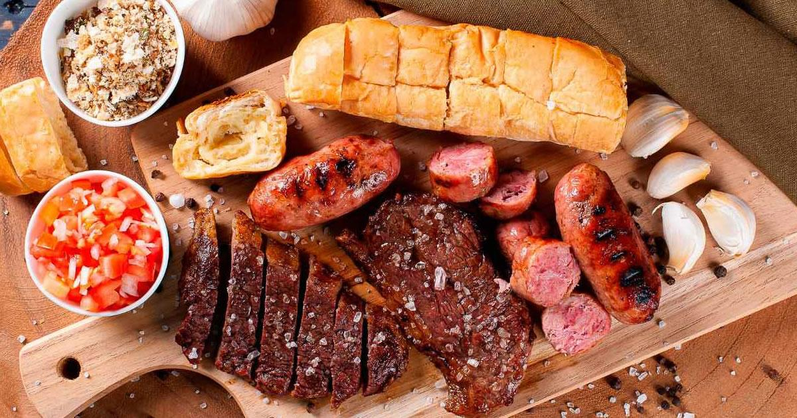
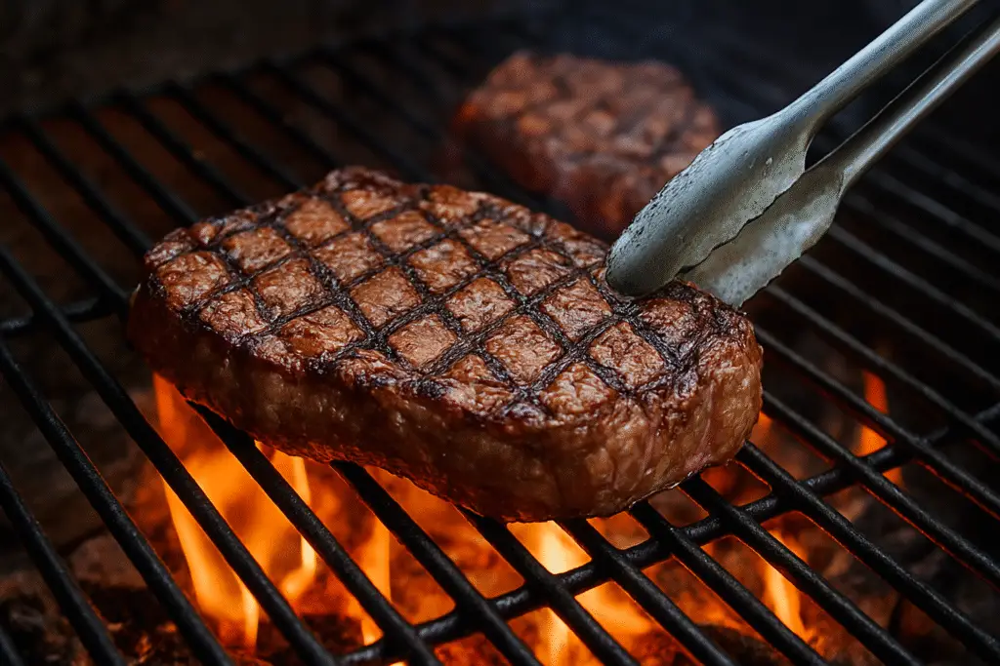

Charcutaria

Charcutaria é a arte de preparar, curar e conservar carnes, resultando em produtos como salames, presuntos, linguiças e patês. O termo vem do francês "charcuterie" e historicamente se referia ao comércio de carne de porco, mas hoje engloba diversos tipos de carne, usando técnicas como salga, defumação, fermentação e desidratação para prolongar a vida útil e aprimorar o sabor.
Técnicas

- • Cura: Utiliza sal e outros conservantes para retirar a umidade da carne, prevenindo a proliferação de bactérias.
- • Defumação: Adiciona uma camada de sabor defumado à carne.
- • Fermentação: Processo que contribui para o desenvolvimento de sabores complexos e textura.
- • Desidratação: Remove o máximo de água da carne, ajudando na sua conservação.
- • Cozimento: Processos de cozimento específicos para determinados produtos, como a carne na lata ou mortadela.